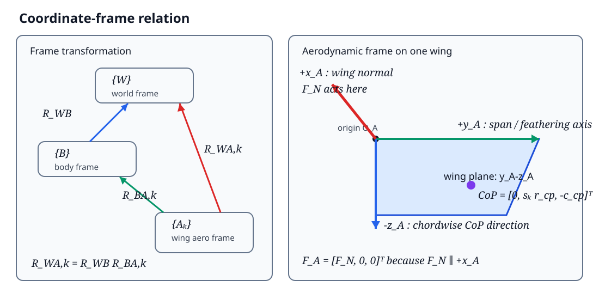

Quasi-steady aerodynamic derivation for a flapping-wing robot in ideal hover¶
Translated from the Chinese original (docs/zh/derivations/hover_simplification.md). It documents the implementation as it stood before 2026-10-28; the pitching-moment sign and the removed force flip are described in quasi_steady_model.md.
Abstract¶
This document gives a simplified derivation of the flapping-wing aerodynamic model in FlapSim, suitable for the main text of a paper. The object of study is restricted to symmetric hover: the instantaneous translational and angular velocities of the body are zero, the stroke-plane angle and the wing deviation angle are zero, and the main wing motion is described by the stroke angle and the passive feathering angle. Under these conditions the in-plane velocity retains only the stroke velocity, which is proportional to the spanwise coordinate, so the first-order and constant terms of the velocity-squared polynomial both vanish, i.e.
On this basis the document derives in turn the single-wing normal force, the aerodynamic pitching moment, the centre of pressure, the rotational damping moment, the single-wing wrench in the world frame, and the total lift of the two wings. Finally it states the condition under which the cycle-averaged lift is proportional to the square of the flapping frequency.
1. Model assumptions¶
To obtain clear closed-form expressions usable in a paper, the following assumptions are adopted.
- The body is approximately stationary at the instant of the aerodynamic computation:
$$ \boldsymbol v_B=\boldsymbol 0,\qquad \boldsymbol\omega_B=\boldsymbol 0. $$
- The stroke-plane angle and the wing deviation angle are both zero:
$$ \Phi=0,\quad\dot\Phi=0,\qquad \phi=0,\quad\dot\phi=0. $$
-
The left and right wings have identical geometry and move in mirror symmetry.
-
The instantaneous angle of attack along the span is approximated by the angle of attack at the representative centre of pressure, i.e. the whole wing uses the same normal-force coefficient at any instant.
-
The aerodynamic force follows a quasi-steady blade-element model; wake capture, added mass, wing–wing interaction and dynamic stall are not considered explicitly.
-
The derivation uses the raw, unclipped aerodynamic forces and takes
lift_scale = moment_scale = 1. The centre-of-pressure relation \(c_{cp}=-M_{aero}/F_N\) therefore holds exactly.
It must be stressed that \(a_{U1}=a_{U0}=0\) is not an identity of the full six-degree-of-freedom model. It holds only under the ideal-hover assumptions above. When the body translates or rotates, or the stroke plane has an offset motion, these two terms are in general non-zero.
2. Coordinate frames and notation¶
2.1 Coordinate frames¶
Before reading the formulas that follow, one must distinguish "the components of a vector" from "the actual direction of the vector in the world". This document uses three levels of coordinate frames.
| Symbol | Frame | Definition |
|---|---|---|
| \(\{W\}\) | world frame | \(+z_W\) vertically upward |
| \(\{B\}\) | body frame | fixed to the robot body |
| \(\{A_k\}\) | aerodynamic frame of wing \(k\) | \(+x_A\) is the wing normal, \(+y_A\) the spanwise/feathering axis, \(-z_A\) points towards the chordwise CoP |
The relationship between the frames is shown in Figure 1.

Figure 1 Relationship between the world frame, the body frame and the wing aerodynamic frames.
Here \(k\in\{L,R\}\) denotes the left and right wing respectively. Define
as the rotation matrix from the body frame to the world frame, and
as the rotation matrix from the aerodynamic frame of wing \(k\) to the world frame. Any wing-local vector \(\boldsymbol q_{A,k}\) transforms to the world frame as
If \(R_{BA,k}\) denotes the rotation matrix from the aerodynamic frame to the body frame, the three satisfy
The coordinate transformation can therefore be understood in two steps:
In the program, \(R_{WA,k}\) is determined jointly by the MuJoCo wing-body orientation and the fixed alignment matrix from the URDF/STL frame to the aerodynamic frame. The derivation below only needs the final \(R_{WA,k}\).
2.2 Why \(F_N\) is written in the first component¶
The column vector
represents "the three components of the force in the aerodynamic frame \(\{A_k\}\)", in the fixed order
So \(F_N\) sits in the first position not because it points along the first world axis, nor because it is the "first row" of some matrix. There is only one reason:
The normal force acts only along \(+x_A\), so its coordinates in \(\{A_k\}\) are necessarily
\(F_N\) is a signed scalar: \(F_N>0\) means the force points along \(+x_A\), \(F_N<0\) means it points along \(-x_A\). There is therefore no need to define separate force vectors for the two directions.
Only after this local vector is transformed to the world frame does one obtain the actual spatial direction:
Writing the rotation matrix by columns,
where \(\boldsymbol e_{x_A}^{W}\) denotes "the wing-local \(+x_A\) unit axis expressed in the world frame". Then
This shows that multiplying by \([F_N,0,0]^T\) simply selects the first column of \(R_{WA,k}\) and scales it by \(F_N\). Hence:
- in the wing aerodynamic frame, \(F_N\) is always the first component;
- in the world frame, \(F_N\) can have all three components \(x_W\), \(y_W\) and \(z_W\) at once;
- a change of wing attitude changes the world direction of the force through \(R_{WA,k}\), without changing how the local force vector is written.
For example, if at some instant
then
Although \(F_N\) is the first component in local coordinates, in world coordinates it lies entirely along \(-z_W\). The current adapter subsequently also flips the sign of the force according to the STL normal convention, so the force actually applied is \(-\boldsymbol F_{W,k}\).
2.3 Left/right wings and the direction of the centre of pressure¶
This document uses one common aerodynamic frame convention for both wings and handles the mirror relationship with
The local coordinates of the centre of pressure are therefore
The three components mean, in order:
- the centre of pressure lies in the wing plane, so its normal coordinate is \(0\);
- the spanwise positions of the left and right wings are \(+r_{cp}\) and \(-r_{cp}\) respectively;
- the chordwise centre of pressure lies along the \(-z_A\) direction defined here, hence it is written \(-c_{cp}\).
2.4 Main symbols¶
| Symbol | Meaning | Unit |
|---|---|---|
| \(R\) | single-wing span | m |
| \(r\) | spanwise coordinate, \(0\le r\le R\) | m |
| \(c(r)\) | local chord | m |
| \(\bar c\) | mean chord | m |
| \(\rho\) | air density | kg/m³ |
| \(\psi\), \(\dot\psi\) | stroke angle and stroke rate | rad, rad/s |
| \(\theta\), \(\dot\theta\) | feathering angle and feathering rate | rad, rad/s |
| \(U_i\) | in-plane relative velocity | m/s |
| \(U_o\) | out-of-plane relative velocity | m/s |
| \(\alpha\) | instantaneous angle of attack | rad |
| \(C_N\) | normal-force coefficient | — |
| \(F_N\) | single-wing local normal force | N |
| \(M_{aero}\) | aerodynamic pitching moment from the pressure distribution | N·m |
| \(M_{rd}\) | feathering rotational damping moment | N·m |
| \(r_{cp}\) | spanwise centre-of-pressure position | m |
| \(c_{cp}\) | chordwise centre-of-pressure distance | m |
| \(s_k\) | left/right wing sign, \(s_L=+1,\ s_R=-1\) | — |
The current rectangular-wing parameters are
3. Wing geometric moments¶
Define the dimensionless spanwise coordinate and the dimensionless chord:
The mean chord satisfies
The radial geometric moments needed for the normal-force integral are defined as
This document mainly uses
The aerodynamic pitching moment also needs the chord-squared weighted moment:
For a rectangular wing \(\hat c(\hat r)=1\), so
4. Local velocity in ideal hover¶
4.1 The general velocity polynomial¶
The full model writes the in-plane and out-of-plane velocities as first-order functions of the spanwise coordinate:
The local velocity squared can therefore be written as
where
4.2 Simplification under the hover assumptions¶
When the body velocity, the body angular velocity, the stroke-plane motion and the deviation motion are all zero, the main velocity at any point on the wing comes from the stroke alone:
Comparing with the general form gives
Therefore
The velocity squared finally degenerates to
This expression is the kinematic basis of all the simplified formulas that follow.
5. Angle of attack and aerodynamic coefficients¶
5.1 Spanwise representative point¶
In pure stroke motion the local dynamic pressure is proportional to \(r^2\), so the spanwise point of application of the resultant force is
For a rectangular wing,
5.2 Instantaneous angle of attack¶
At the spanwise representative point,
The inflow deflection angle is therefore zero and the angle of attack simplifies to
The normal-force coefficient used by the program is
The chordwise centre-of-pressure fraction is
The two relations above belong to the empirical aerodynamic model. This document adopts them directly and does not derive them from first principles of fluid mechanics. For a formal submission, the original experimental or modelling source of these empirical coefficients should be added here; this document does not fabricate references that have not been verified.
6. Single-wing normal force¶
The quasi-steady normal force on a spanwise element \(dr\) is
Substituting
gives
Integrating along the span:
Hence the single-wing normal force in ideal hover is
For the current rectangular wing \(r_{22}=1/3\), so
7. Aerodynamic pitching moment and chordwise centre of pressure¶
7.1 Aerodynamic pitching moment¶
Let the distance from the local centre of pressure to the reference edge be \(d_{cp}(\alpha)c(r)\). The pitching moment produced by the elemental normal force is
Substituting the elemental normal force and integrating along the span:
Hence
7.2 Equivalent chordwise centre of pressure¶
The model does not apply \(M_{aero}\) a second time as an independent moment; instead it converts it into the chordwise point of application of the normal force:
Substituting the \(F_N\) and \(M_{aero}\) obtained above:
For a rectangular wing,
so one further obtains
This result shows that, for a rectangular wing under the ideal-hover assumptions, the chordwise centre of pressure equals exactly the local chord times the empirical centre-of-pressure fraction.
8. Feathering rotational damping¶
The passive feathering motion produces a damping moment that opposes the feathering rate:
For the current rectangular wing \(z_{rd}=1\). Since
the rotational damping always dissipates mechanical energy.
\(M_{aero}\) and \(M_{rd}\) play different physical roles:
- \(M_{aero}\) is implemented implicitly through the chordwise centre of pressure \(c_{cp}\);
- \(M_{rd}\) is applied as an independent pure moment about the feathering axis.
9. Single-wing aerodynamic force in the world frame¶
9.1 Force and centre of pressure in the aerodynamic frame¶
The normal force of wing \(k\) in its aerodynamic frame is
The position of the centre of pressure relative to the wing-body origin is
Its world coordinates are
9.2 Force in the world frame¶
The single-wing normal force transformed to the world frame is
9.3 Moment about the wing centre of mass¶
The world-frame lever arm from the wing centre of mass to the centre of pressure is
The moment produced by the normal force at the centre of pressure is
The rotational damping moment transformed to the world frame is
Hence the total single-wing moment is
The complete single-wing wrench is
10. Total lift of the two wings¶
10.1 Normal correction¶
The current STL wing normal is opposite to the oriented normal of the aerodynamic model, so the adapter applies one sign correction to the world-frame aerodynamic force:
This sign correction belongs to the current URDF/STL coordinate convention, not to the quasi-steady aerodynamic theory itself. [Translator's note: this force flip was removed on 2026-10-28; see quasi_steady_model.md.]
10.2 World-frame resultant of the two wings¶
The total aerodynamic force applied to the robot by the left and right wings is
Substituting the single-wing expressions:
Define the world-frame vertical unit vector
then the instantaneous total lift is
Further defining the projection of the normal of wing \(k\) onto the world vertical,
one obtains
In the fully symmetric state,
so
If the current coordinate convention makes the aerodynamic normal of the wings point along world \(-z_W\), then \(\gamma=-1\) and
This step completes the coordinate transformation from the local single-wing normal force to the total lift of the two wings.
11. Cycle-averaged lift and the frequency-squared law¶
Let the stroke angle be
then
Substituting into the single-wing normal force:
The cycle-averaged lift of the two wings is defined as
Introducing the dimensionless phase
gives
where
Hence, as long as the following dimensionless periodic quantities do not change significantly with frequency,
the cycle-averaged lift satisfies
FlapSim's cycle-averaged hover model uses
where \(k_f\) is identified from the full fixed-base flapping simulation rather than prescribed directly by the constant-coefficient approximation above.
12. Summary of the derived results¶
Under ideal-hover conditions the aerodynamic derivation can be summarised in the following seven steps.
- Local velocity:
$$ U_i(r)=\dot\psi r,\qquad U_o(r)=0. $$
- Velocity-squared coefficients:
$$ a_{U2}=\dot\psi^2,\qquad a_{U1}=a_{U0}=0. $$
- Single-wing normal force:
$$ F_N =\frac12\rho\bar cR^3r_{22} C_N(\alpha)\dot\psi^2. $$
- Aerodynamic pitching moment:
$$ M_{aero} =-\frac12\rho\bar c^2R^3z_{cp,2} C_N(\alpha)d_{cp}(\alpha)\dot\psi^2. $$
- Centre of pressure:
$$ r_{cp}=R\frac{r_{33}}{r_{22}}, \qquad c_{cp} =\bar c\,d_{cp}\frac{z_{cp,2}}{r_{22}}. $$
- Single-wing force in the world frame:
$$ \boldsymbol F_{applied,k} =-R_{WA,k} \begin{bmatrix}F_{N,k}\0\0\end{bmatrix}. $$
- Total lift of the two wings:
$$ F_{\mathrm{lift}} =-\gamma_LF_{N,L}-\gamma_RF_{N,R}. $$
In the ideal symmetric state with vertical wing normals:
13. Range of validity¶
The formulas in this document are intended for the ideal-hover theoretical derivation in the paper. In the following situations the full velocity model should be restored, and \(a_{U1}\) and \(a_{U0}\) are in general no longer zero:
- the body has a significant translational velocity;
- the body has roll, pitch or yaw angular velocity;
- the stroke-plane angle or the wing deviation angle is non-zero;
- the shoulder-offset velocity is not negligible relative to the local inflow;
- the study concerns rapid manoeuvres, strongly coupled attitude changes or large-range free flight.
The simplified model in this document is therefore suited to a "hover-state aerodynamic modelling" section of the paper, while the full FlapSim implementation is suited to numerical simulation and validation in non-ideal states.